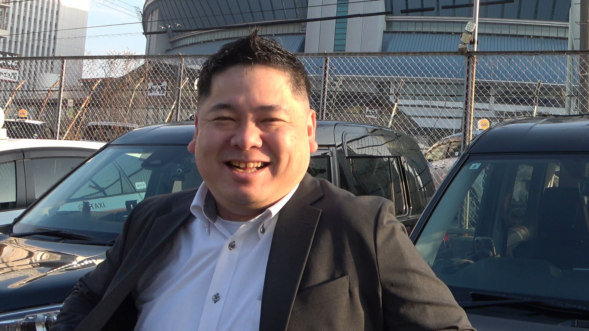

タクシー業界は「人が長く続かない」という話をよく耳にします。ところが、ワンコインドームは離職率が一桁台です。なぜそんなに低いのでしょうか？
確かに一般的なタクシー会社では、半分以上の人が1年以内に辞めてしまうこともあります。 でも、うちの会社は全員で新人を育てていく文化があるんです。だから安心して続けられるんですよ。

「離職率が驚異的に低いタクシー会社」について、答えてくれたタクシー乗務員さん
アーリーさん 乗務歴３年目 昼勤
確かに一般的なタクシー会社では、半分以上の人が1年以内に辞めてしまうこともあります。 でも、うちの会社は全員で新人を育てていく文化があるんです。だから安心して続けられるんですよ。
まず入社すると、現役トップドライバーによる側乗研修が３日間あります。
横に乗ってリアルな営業のコツを教えてもらえるので、地理や接客の不安もすぐ解消されます。
そこが違うんです。ワンコインドームにはLINEのサポートグループがあって、わからないことがあればすぐに聞けます。
例えば「この道どう行くのが早い？」とか「お客さま対応で困った」なんて時も、経験豊富な先輩方がすぐに答えてくれるんです。
そうなんです。それに、年に２回はバーベキュー交流会があります。
そこでは他の乗務員さんと顔を合わせて、ざっくばらんに話せるので、普段は聞きにくいことも相談できます。
家族ぐるみで参加する人もいて、雰囲気はすごく温かいですよ。
さらに、会社独自の映像研修教材もあります。営業ノウハウや安全運転のポイントを、いつでも自分のペースで学べるんです。
現場に出てからも繰り返し見られるので、成長が実感できます。
はい。タクシーは個人プレーに見えて、実はチームワークが大切なんです。
うちは「会社全員で育てる」という文化が根づいているからこそ、離職率が一桁台に抑えられているんだと思います。
これがワンコインドームの一番の強みですね。
ワンコインドームでは、全員で支え合う環境があるので、未経験でも安心してスタートできます。
「働き始めてすぐ辞めてしまうかも…」という不安を抱える必要はありません。
これが、私たちワンコインドームの自慢です。